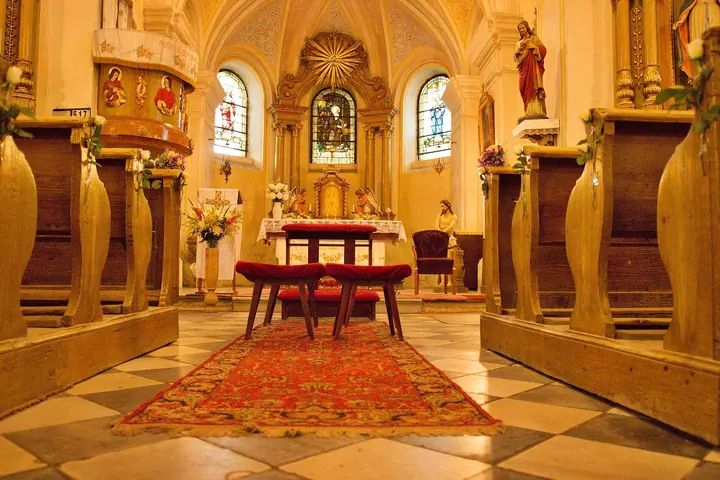
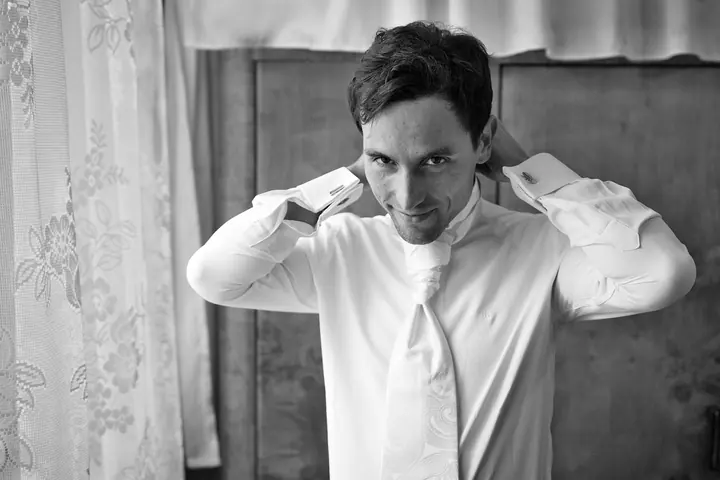
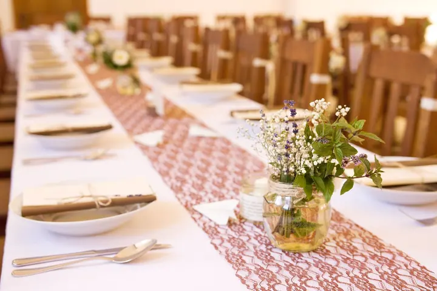
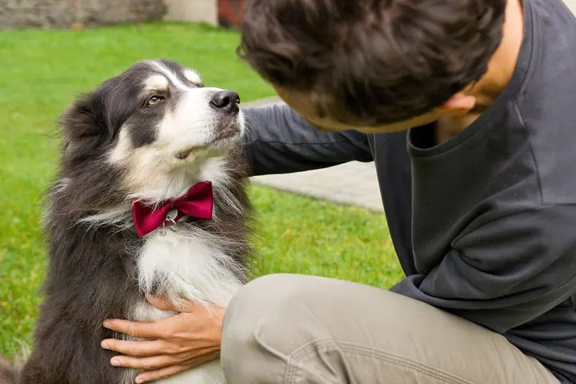

jedna
Svatby
Fotím svatební den od ranních příprav přes obřad v kostele až po prostřené stoly a výzdobu. Zajímají mě i drobnosti, které den dotvářejí: kytice, staré rodinné fotky nebo krabička na přání.

Svatební a dokumentární fotograf · Brno, Královo Pole

Jmenuji se Aleš Mylan, mezi přáteli Yoku, a fotím v Brně. Nejvíc mě baví svatby, lidé a drobné detaily, které celý den dotvářejí. Fotky dělám pro radost, vaši i svoji.
Více o mně
Co fotím
jedna
Fotím svatební den od ranních příprav přes obřad v kostele až po prostřené stoly a výzdobu. Zajímají mě i drobnosti, které den dotvářejí: kytice, staré rodinné fotky nebo krabička na přání.
dvě
Fotím lidi a dění kolem sebe, často v dokumentárním duchu a klidně i černobíle. Postupně jsem přešel od focení vlastní rodiny k lidem kolem sebe.
Dokumentární fotky z akcí, kde se něco děje. Fotím to, co se opravdu odehrává, bez zbytečného aranžování.
Den, ke kterému se rádi vrátíte.

Za objektivem
Jsem zájmový, lépe řečeno amatérský fotograf. Začínal jsem tím, že jsem fotil svoji rodinu, a jak šel čas, přidali se k ní lidé a dění kolem mě. Focení je můj velký koníček a je to na fotkách vidět: nespěchám a všímám si věcí, které by jinak zapadly.
Mám rád dokumentární fotky, tedy takové, které ukazují, co se opravdu děje. Na svatbě proto nefotím jen obřad, ale i ranní přípravy, kytici odloženou na lavici v kostele nebo staré svatební fotky rodičů na stolku s dary. Část fotek nechávám v černobílé, protože některým chvílím sluší víc.
Už několik let dělám projekt „Rok má 365 dnů“, ve kterém se snažím každý den pořídit aspoň jednu fotku, která ukáže, co prožívám a co mě zaujalo. Bydlím v Brně v Králově Poli a moc rád se s vámi domluvím na focení.
Aleš
Pošlete mi termín a pár slov o tom, co chcete fotit. Ozvu se vám a domluvíme se, jestli vám můžu vyhovět.
Probereme, kde a jak budeme fotit, na čem vám záleží a které chvíle nebo detaily nesmí chybět.
V den focení se pohybuji nenápadně a fotím to, co se opravdu děje, od příprav po drobnosti, kterých si jinak nikdo nevšimne.
Vyberu ty nejlepší snímky a upravím je, barevně i černobíle. Pak vám je předám, abyste se k nim mohli kdykoli vracet.
Portfolio
Otázky
Fotím jako zájmový fotograf, focení je můj velký koníček. Fotím rodinu, lidi kolem sebe, akce i svatby a každému focení se věnuji naplno.
Bydlím v Brně v Králově Poli. Pokud se konáte jinde, napište mi a domluvíme se.
Ano, černobílé fotky jsou samostatnou částí mého portfolia. Některé chvíle, třeba ranní přípravy ženicha, v nich vyzní líp než v barvě.
Kromě tohoto webu mě najdete na Zoneramě (zonerama.com/yokuphoto), na Fotopátračce a na Facebooku Yoku Photo World.
Napište pár vět o tom, co si představujete. · +420 778 073 414